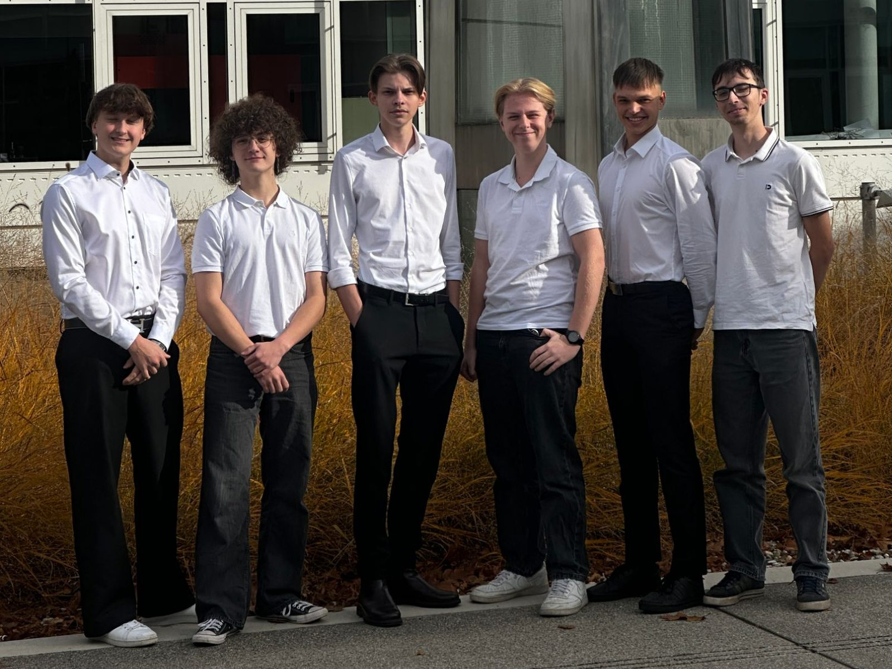

Konstruktion
Mechanik & CADWir entwickeln Rotor, Gehäuse und Bauteile und prüfen, wie alles in die engen CanSat-Vorgaben passt.
Team SWASH
Wir sind ein sechsköpfiges Team des Jahrgangs 2023 an der HTL Kaindorf und entwickeln unser System gemeinsam – von Mechanik und Elektronik bis zu Flugsoftware und wissenschaftlicher Auswertung.
Wir entwickeln Rotor, Gehäuse und Bauteile und prüfen, wie alles in die engen CanSat-Vorgaben passt.
Wir integrieren Flugcomputer, Sensorik, GPS, Funk und Stromversorgung in ein kompaktes System.
Wir entwickeln Flugphasen, Telemetrie und die Verbindung zur Bodenstation sowie die Kamera-Software.
Wir planen Messungen, werten NDVI-Bilddaten aus und dokumentieren Versuche und Ergebnisse.
Wer wir sind
Die meisten von uns arbeiten in mehreren Fachbereichen mit.

Gemeinsam entwickeln
Die Fachbereiche arbeiten eng zusammen: Jede Änderung an Mechanik, Elektronik oder Software beeinflusst das Gesamtsystem und wird gemeinsam überprüft.